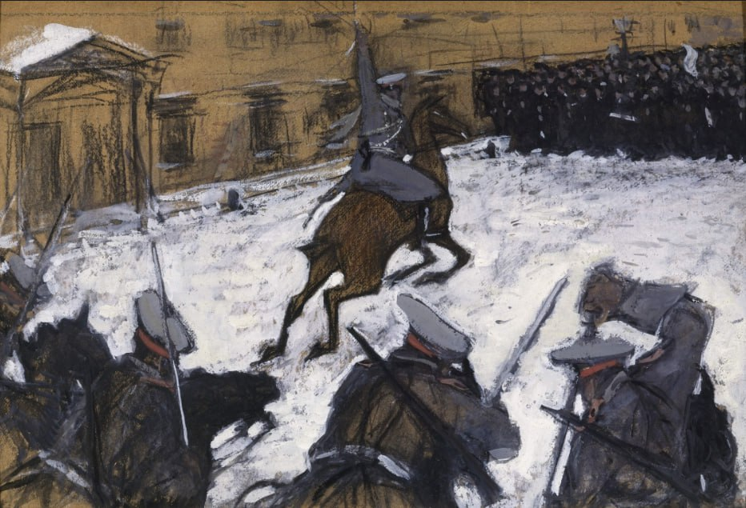

Валентин Александрович Серов
Солдатушки, бравы ребятушки, где же ваша слава?, 1905

Картон, темпера, графит, гуашь, уголь. 47,5 х 71,5
ГРМ, СПб. Поступила в 1918 из Художественного бюро Н. Е. Добычиной, Петроград; ранее – собрание М. Горького (дар автора), Петроград.
История картины
- 9 января 1905 года Валентин Серов стал свидетелем разгона мирной демонстрации царскими войсками. Зрелище было страшное: из окон Академии художеств он видел, как сверкают на солнце шашки всадников, как солдаты вскидывают свои ружья, как снег становится красным от крови. Увиденное изменило Серова: прежде не имевший каких-либо политических взглядов, он больше не мог оставаться в стороне.
- Он вышел из состава Академии художеств (президентом которой был великий князь Владимир Александрович, по мнению Серова, виновный в случившейся резне не менее императора). Летом того же года Серов принял деятельное участие в организации сатирического журнала «Жупел».
- Прежде чем власти прикрыли журнал, вышло всего три номера. В одном из них и была опубликована картина «Солдатушки, бравы ребятушки, где же ваша слава?» - работа настолько же скупая по форме, насколько пронзительная по содержанию.
- Раскрывая тему, менее сдержанный художник едва ли сумел бы побороть соблазн плеснуть на картон красным. Но Серов остался верен себе: снег на его картине ещё не обагрился кровью. Толпа пока движется единым серым строем, но через несколько секунд она налетит на волнорез кавалерии. Линия «обороны» словно изломана нетерпением – шашки выхвачены из ножен, трепещут конские ноздри, в том, как напряжены спины улан, чувствуется охотничий азарт.
- Знатный анималист Серов намеренно исказил галоп находящейся в авангарде лошади – она, толкнувшись всеми четырьмя ногами, летит, не касаясь копытами земли. В этом инфернальном аллюре – мощный подтекст: не царские войска движутся навстречу манифестантам, а всадники Апокалипсиса. Минимумом средств Серову удалось передать движение, неотвратимую стремительность катастрофы. «Кадр» звенит саспенсом, ожидание расправы – страшнее самой расправы.
- «То, что пришлось видеть мне из окон Академии художеств 9 января, не забуду никогда, – писал художник в письме Илье Репину. – Сдержанная, величественная, безоружная толпа, идущая навстречу кавалерийским атакам и ружейному прицелу, – зрелище ужасное…Никому и ничем не стереть этого пятна».
- К слову, некоторые исследователи полагают, что на этой картине Серов изобразил не события Кровавого воскресенья, а разгон демонстрации в Москве, возле Училища живописи, ваяния и зодчества. Это вполне возможно. Увы, в 1905-м дефицита подобной натуры Серов не испытывал.
Источник: https://rusmuseumvrm.ru/data/collections/painting/19_20/zh-4297/index.php